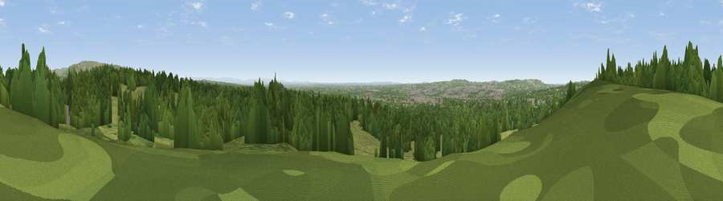

Viewpoint near Haigh
#31879 in England · top 74% of its area beats it · near Haigh · access?Where it is
The exact computed spot (SD 59925 08475). Click the marker for map links.
Public access: no public right of way or access land is recorded at this exact spot — it may be on private land. Computed from Natural England's CRoW access layer and OpenStreetMap rights of way — not the legal definitive map. Always verify locally.
The view, rendered

A 360° render of this exact spot computed from the terrain model, tree cover and land cover — summer colours, afternoon light, calibrated against photographs of famous viewpoints. Real trees, hedges and buildings will differ in detail.
The panorama
Grey silhouette: terrain skyline in each direction (720 bearings, Earth curvature and refraction included). Dashed green: skyline with trees (+15 m) and buildings (+8 m) as obstacles. Blue strip: how far the ground is visible on each bearing.
Where the view opens
Wedge length = distance to the farthest visible ground on that bearing (vegetation-aware). Rings at 10, 25 and 50 km.
What fills the view
51% woodland · 41% grassland · 6% built-up · 2% cropland
Angular shares of the visible panorama (visual magnitude), not map area. Landscape diversity 0.42 (0–1 Shannon).
Key numbers
More beautiful places nearby
The staircase of upgrades: each row has a higher view potential than everything closer. Driving times are estimates from straight-line distance, calibrated against real road routing — check an actual route before setting out.
| Place | Direction | Drive | Score |
|---|---|---|---|
| Viewpoint near Aspull | SE · 2 km | ~5 min | 52.1 |
| Viewpoint near Horwich | ENE · 7 km | ~14 min | 58.4 |
| Rivington Pike | NE · 7 km | ~14 min | 81.9 |
| White Brow | ENE · 7 km | ~15 min | 82.9 |
| Warton Crag | N · 65 km | ~88 min | 83.2 |
| Viewpoint near Grange-over-Sands | NNW · 73 km | ~96 min | 83.4 |
| Viewpoint near Cartmel | NNW · 75 km | ~98 min | 87.0 |
| Viewpoint near Cartmel | NNW · 75 km | ~99 min | 87.2 |
53.57134, -2.60663 · source: screening · position refined by local search. Computed location — check access rights before visiting.